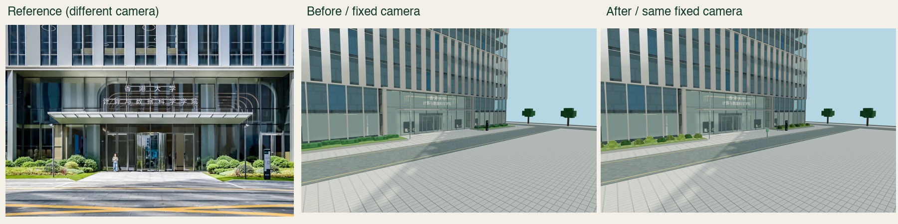
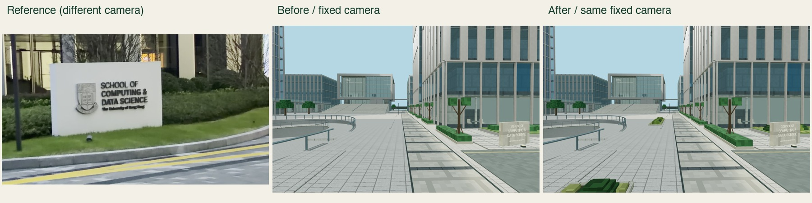
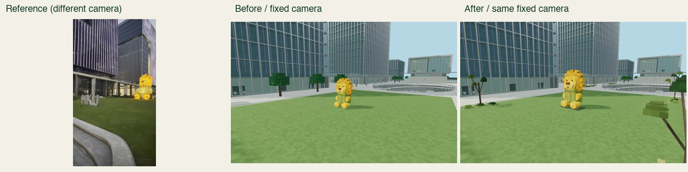
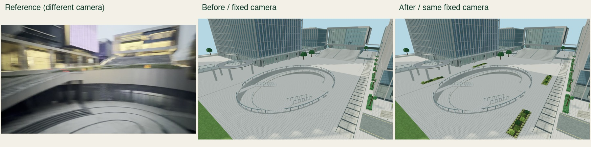
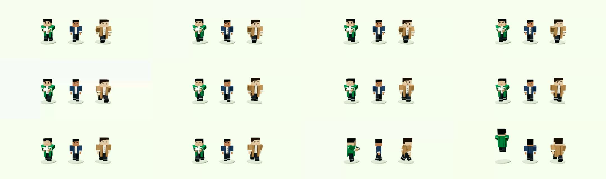
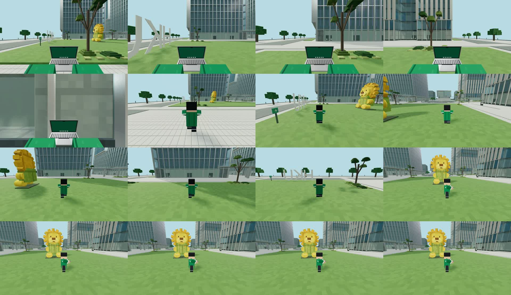

HKU SHANGHAI · EXPERIENCE REPAIR · 2026.11.14
稳定的步态、克制的声音，
更完整的校园室外。
进入校园 · 独立人物预览 · 完整修复说明 · 实景依据与估算项 · 原有任务验收
狮子本体 5.8 米、低支撑 0.12 米均为暂定值，不是实测。声音已实际播放并录制，但当前工具不能回传音频供主观听辨；音色验收仍需真人试听。数值检查没有代替这一项。
50 秒连续操作 · 含游戏实际声音
外部 Node 脚本通过原生 HTTP 动作接口操作同一角色控制器；画面与声音均实时采集。前 50 秒连续保留，仅裁去结尾静止等待。完整 68 秒原始录屏 · 外部命令记录 · 浏览器逐帧记录
| 时间 | 动作 | 结果 |
|---|
| 0–11 秒 | 站立、铺装/草地步行、奔跑、停止、跳跃落地 | 按地面切换采样；停止与空中无脚步，落地一次 |
| 11–26 秒 | 返回玻璃墙、顶墙、转向、第三人称持电脑行走 | 外墙阻挡；顶墙段无脚步，头部稳定 |
| 26–50 秒 | 绕狮子、绿化区域行走，腾空时切换视角 | 路线连贯，切视角继续同一物理轨迹 |
狮子与人物的真实游戏视角
| 网格尺寸 | 修改前 | 修改后（估算） |
|---|
| 本体宽 × 高 × 深 | 3.075 × 4.565 × 1.752 m | 3.908 × 5.800 × 2.226 m |
| 独立支撑宽 × 高 × 深 | 无独立对象 | 3.5 × 0.12 × 2.0 m |
| 总高 | 4.565 m | 5.920 m |
依据用户 U05 视频三个角度及“实物较大”的反馈，统一比例约增大 27.1%。照片里的远处楼层、HKU 字母没有当作尺寸标尺。相机参数 · 实际边界测量
实景参考 / 修改前 / 修改后
中间和右侧使用完全相同的固定相机。左侧为相关实景来源，拍摄位置不同；不把它冒充为精确配准照片。

CDS-1 入口 · R01 官方照片。补低地被、高低灌木；保留门前空地。

楼侧步道 · U04 01:43。延长绿篱段，保持可通行间隙。

狮子草坪 · U05 00:07。校准本体网格边界，补边缘植物，中央保持开敞。

下沉广场外缘 · U04 02:12。补外围种植带，不挡东侧坡道入口。精确轮廓仍为估算。
人物动态 · 独立预览场景
修改前：原轨道头部摇摆与局部根运动。修改后：手持电脑步行、侧面奔跑、背面跳跃/落地，头部由单一稳定姿态控制。
查看动态抽帧


音频核查
原合成脚步和环境素材片段（不是同路线录屏）。修改后实际游戏混音；与完整录屏同源。 录音双声道 48 kHz，峰值 0.0623，削波采样 0。录屏期间一个环境源、一次启动；站立、停止、顶墙与腾空段无脚步事件。六次切视角、背包/电脑、暂停恢复和返回入口的检查另见日志。
电平/接缝数据 · 键盘、界面、音量检查 · 人工接管与旧命令拒绝 · 页面隐藏与恢复 · CC0 音源与处理说明
代码与资产
可修改参数及启动命令见修复说明。npm run check:all 执行完整回归，npm run check:experience 单独验证本轮。
校园 GLB · 狮子 GLB · 人物 GLB · 检查日志 · GLB 校验日志
已确认的种植区域、推断的位置与未确认的尺寸分开记录。建筑高度、狮子绝对尺度、树木品种和精确株距仍需更多实景资料。原有校园室外探索范围不变。